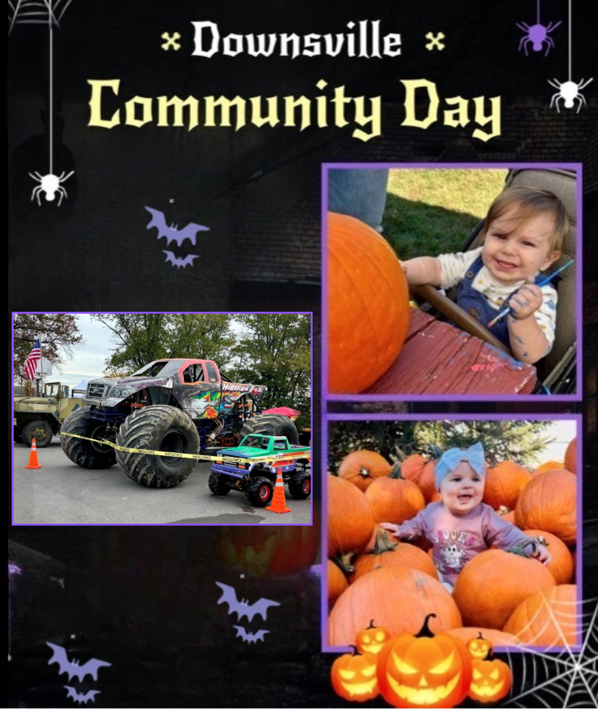

Come enjoy a free day of vendors and activities.
There will be vendor, raffles, tip jars, 50/50, great food, and free activities
Free activities include face painting, pumpkin painting, scarecrow making, and cotton candy
If you are interested in being a vendor contact Chasity Long at 301-334-0427
For more information visit our
Facebook.